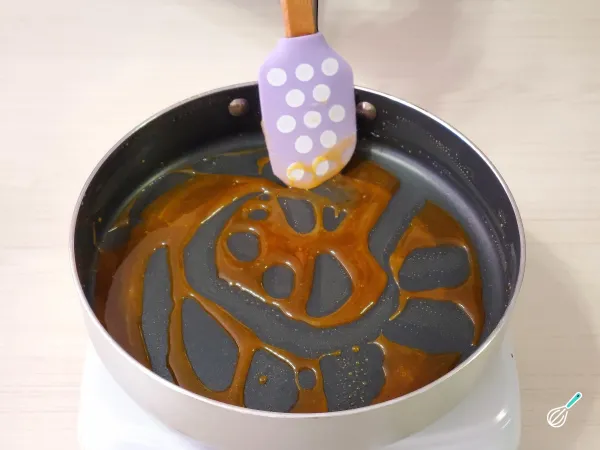
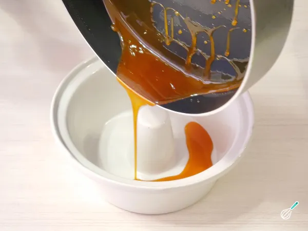
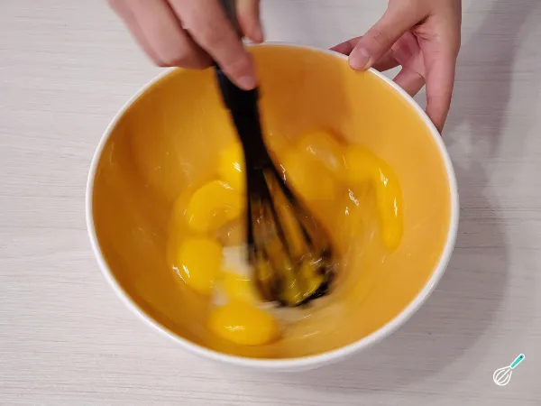
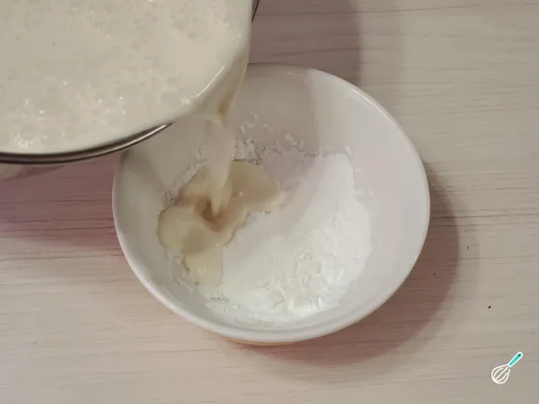
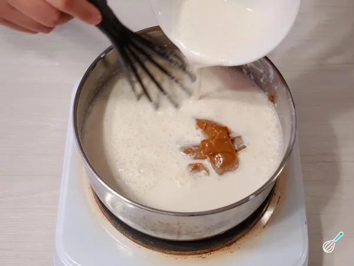
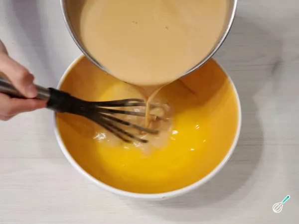
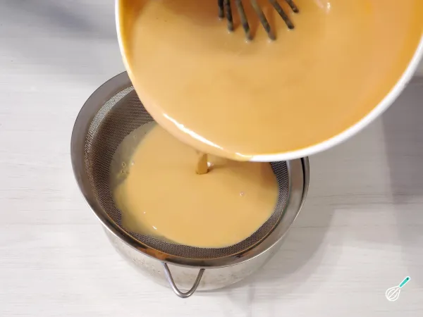
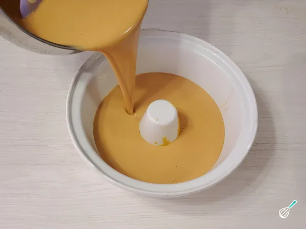
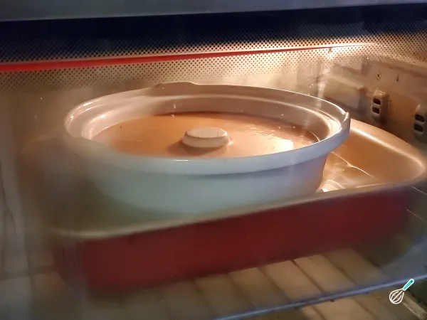
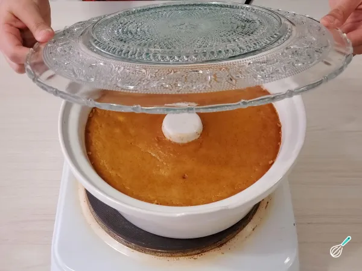

Como fazer Flan de doce de leite
- Comece preparando o caramelo seco para cobrir a forma. Para fazer, coloque o açúcar em uma panela e deixe esquentar , você notará que começa a derreter. Quando isso acontecer, coloque mais açúcar e mexa com uma espátula própria para altas temperaturas até que tudo derreta novamente (não deixe ganhar muita cor). Continue com o mesmo processo até terminar todo o açúcar.
- Depois de derretidos todos os grãos de açúcar, deixe ganhar cor até ficar dourado. Quanto mais escuro o caramelo ficar, mais intenso e amargo será o sabor. Imediatamente despeje este caramelo com muito cuidado na base da forma quente e depois mova-o para cobrir as laterais e deixe esfriar.
- Em uma tigela, coloque os ovos, as gemas e o açúcar. Misture com um fouet, não é necessário bater, deve-se evitar formar bolhas.
- À parte, em uma panela grande, misture o leite com o creme de leite e despeje um pouco dessa mistura na tigela de amido de milho. Mexa com um batedor ou garfo até dissolver completamente.
- Despeje o amido de milho dissolvido na panela com o leite e acrescente o doce de leite . O amido de milho ajudará a evitar a formação de camadas durante o cozimento. Aqueça até atingir o ponto de ebulição. Mantenha no fogo, mexendo sempre, por alguns minutos para cozinhar o amido de milho.
- A seguir, despeje uma concha desses leites sobre a mistura de ovos . Certifique-se de mover constantemente o fouet para evitar que as claras coagulem devido ao calor.
- Continue incorporando essas duas misturas aos poucos e termine de coar.
- Preencha a forma e leve ao forno em banho-maria a 150°C por aproximadamente 1 hora .
- Terminado o tempo de cozimento, desligue o forno e abra um pouco a porta para que o pudim esfrie. Depois, você pode retirá-lo do forno e deixá-lo esfriar até a temperatura ambiente antes de refrigerá-lo durante a noite .
- No dia seguinte, para ajudar a desenformar com mais facilidade, aqueça a base da forma.
- Por fim, desenforme o flan de doce de leite caseiro e bom apetite! Compartilhe o resultado da sua receita nos comentários e poste fotos!









